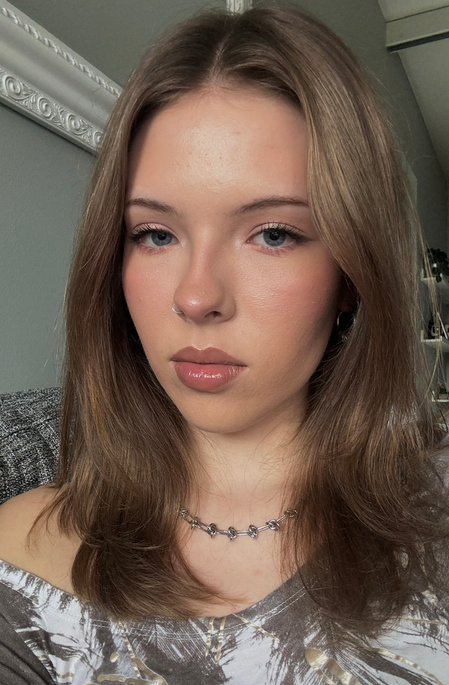

✶
ABOUT ME
✶Agnieszka Aleksandra Kieltyka
Multimediadesign student at Erhvervsakademi København (EK)
I am a multimediadesign student from Iceland with a strong interest in visual and creative design. Prior to this education, I studied digital fashion design through an online university course, as well as design and marketing in gymnasium, which provided me with a solid creative foundation and motivation to continue working within design. Creativity has always been a central part of my interests.
